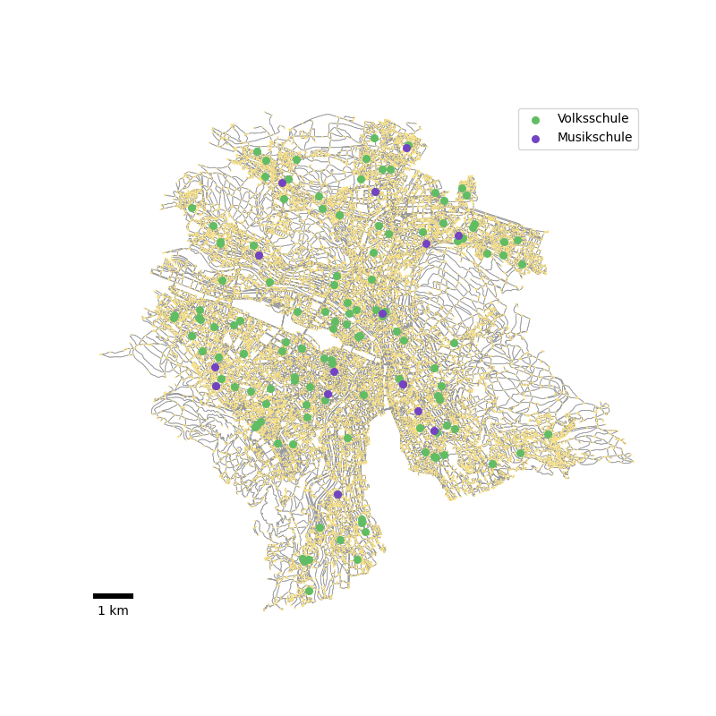
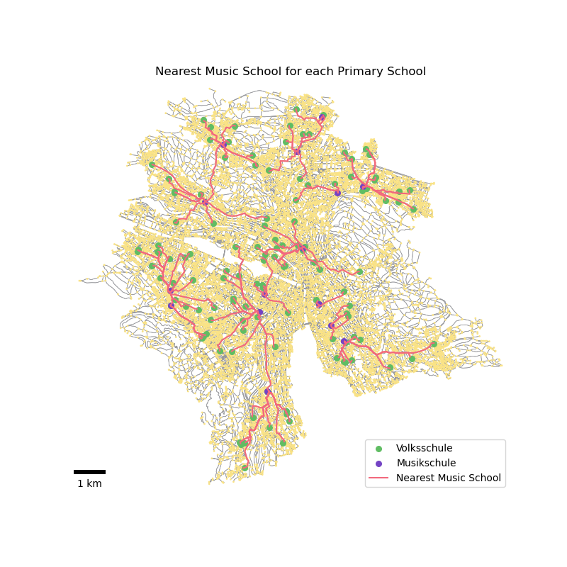
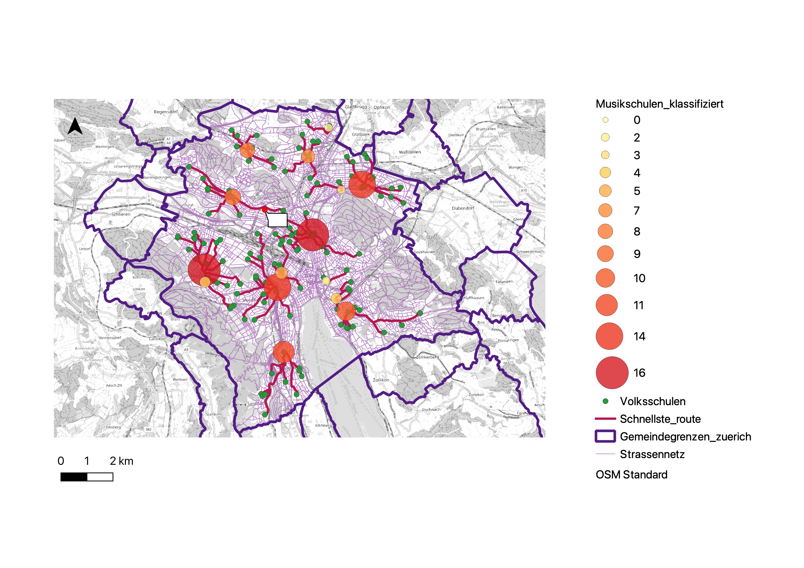

Die vorliegende Projektarbeit nutzt Methoden der Netzwerkanalyse und Programmierung zur Untersuchung von Schulwegen in der Stadt Zürich. Geodaten von Volksschulen und Musikschulen wurden über die offizielle Website der Stadt Zürich extrahiert und in ein Strassennetz integriert, wobei das OSMnx-Paket in Python eine zentrale Rolle spielte. Die Analyse umfasste die Berechnung kürzester Wege, Reisezeiten und Distanzen zwischen Volksschulen und Musikschulen. Die finale Visualisierung erfolgte in QGIS, wobei ein Fokus auf der Identifizierung von Musikvierteln und den am häufigsten besuchten Musikschulen lag. Die Schwierigkeiten bei der Datenbeschaffung zu Schüler:innenzahlen pro Schulhaus sowie Herausforderungen bei der Zentralitätsmasse und Routeninterpolation wurden transparent dargelegt. Die Arbeit ermöglicht Einblicke in Schulwege, Besuchshäufigkeiten von Musikschulen und betont die Bedeutung von verfügbaren Datenqualitäten für umfassende Analysen.
1 Einleitung
Mit vorliegender Projektarbeit sollen die im Modul “Angewandte Geoinformatik HS23” erworbenen Methoden vertieft angewendet werden. Der Schwerpunkt liegt auf der Integration von Netzwerkanalyse und Programmierung zur Analyse von Schulwegen und Musikschulbesuchen in der Stadt Zürich. Die angewandten Methoden umfassen die Extraktion und Integration von Geodaten, die Nutzung von OSMnx zur Verarbeitung von Strassennetzen und die Anwendung von Netzwerkanalyse-Techniken zur Berechnung kürzester Wege, Reisezeiten und Distanzen zwischen Bildungseinrichtungen. Die Arbeit dient nicht nur der Anwendung theoretischer Kenntnisse, sondern auch der Identifizierung und Überwindung praktischer Herausforderungen im Umgang mit realen Geodaten. Dieser Kontext betont die praktische Relevanz der angewandten Geoinformatikmethoden und fördert ein tieferes Verständnis für deren Anwendung in konkreten, komplexen Szenarien.
1.1 Aufgabenstellung und Zielsetzung
Für die Vertiefung und Anwendung der erlernten Methoden sollen zwei thematische Blöcke des Moduls ausgewählt und in das Projekt integriert werden. Dabei soll ein besonderer Fokus auf der GIS-Theorie liegen. Mit dem Projekt soll eine optimale Routenplanung für sämtliche Volksschulen in der Stadt Zürich zu den jeweils nächstgelegenen Musikschulen entwickelt werden. Im Fokus steht die Ermittlung der schnellsten Route von den einzelnen Schulhäusern zu den identifizierten Standorten der Musikschulen, wobei diverse Einflussfaktoren wie Verkehrsbedingungen und die Topologie des Strassennetzwerks systematisch berücksichtigt werden sollen. Das Hauptanliegen besteht darin, sicherzustellen, dass jede Schülerin und jeder Schüler die nächstgelegene Musikschule besuchen kann, ohne dabei die gesamte Stadt durchqueren zu müssen. In einem weiteren Schritt sollen diejenigen Musikschulen, die am meisten besucht werden als eine Art «Hotspots» markiert werden. Dies ermöglicht eine zusätzliche Bewertung der Zugänglichkeit der Musikschulen unter Berücksichtigung ihrer geografischen Verteilung einer Häufigkeit. Dieses Projekt vereint Aspekte der Netzwerkanalyse, Programmierung und Geodatenverarbeitung, um eine effiziente und zugängliche Verbindung zwischen den Bildungseinrichtungen herzustellen.
1.2 Fragestellung
Unter Berücksichtigung der oben genannten Ausgangslage und Zielsetzung wurden die folgenden Forschungsfragen formuliert: 1. Wie gross ist die Distanz zwischen der jeweiligen Volksschule und der Musikschule? 2. Wie viel Zeit nimmt diese Distanz in Anspruch? 3. Welches ist die am häufigsten besuchte Musikschule? 4. Wo liegen die Musikviertel-Hotspots?
2 Methodik
Im Rahmen der vorgegebenen Aufgabenstellung, greift die vorliegende Untersuchung auf die Disziplinen der Netzwerkanalyse und des Programmierens als methodische Grundlagen zurück. Die Datenbasis für dieses Projekt besteht aus Geodaten, die Informationen über die Volksschulen und Musikschulen der Stadt Zürich beinhalten. Der Datenbezug erfolgte über die offizielle Website der Stadt Zürich, wobei die Daten der Volksschulen und Musikschulen in Form von Geopackeges bereitgestellt wurden und als puktbasierte Datensätze heruntergeladen werden konnten. Ein entscheidender Schritt in der Umsetzung dieser Arbeit besteht darin, das Strassennetz der Stadt Zürich mithilfe der OpenStreetMap – Daten zu integrieren. Dies erfolgte unter Verwendung des Python – Pakets “OSMnx”, das fünf essenzielle Funktonen zur Verfügung stellt.
Automatisiertes Herunterladen von politischen Grenzen und Gebäudegrundrissen: Mithilfe von OSMnx können Ortsgeometrien von OpenStreetMap für beliebige Standorte weltweit mit nur einer Zeile Python-Code heruntergeladen und visualisiert werden.
Massgeschneidertes und automatisiertes Herunterladen und Erstellen von Strassennetzdaten: OSMnx erleichtert den Datenbezug von Strassennetzen, die daraufhin direkt in Python geplottet werden können.
Die algorithmische Korrektur von Netzwerktopologien: Die Netzwerktopologie bezieht sich auf die räumliche Anordnung und Verbindung von Strassenelementen im Netzwerk, wie Strassen, Kreuzungen, Einbahnstrassen und Fussgängerwege. OSMnx verwendet verschiedene Algorithmen, um die Rohdaten von OpenStreetMap in ein konsistentes und präzises Strassennetzwerk zu überführen.
Das Speichern der bearbeiteten Strassennetze als Shapefile-Datei: Die durch OSMnx bearbeiteten Strassennetze können als Shapefile-Datei mit Knoten und Kanten gespeichert werden. Dies ermöglicht weitere Bearbeitungsschritte in einer GIS-Umgebung.
Die Analyse von Strassennetzen und Durchführung von Berechnungen: OSMnx bietet die Möglichkeit, Strassennetze zu analysieren, einschliesslich der Berechnung von Routen, der Projektion und Visualisierung von Netzen sowie der Durchführung von Berechnungen metrischer und topologischer Masse. Diese Funktionalitäten erlauben eine umfassende Untersuchung und Auswertung der Strassennetze im Kontext des Projekts (Boeing, 2017).
Um eine einheitliche Referenz für die Analyse zu gewährleisten, erfolgt die Transformation des erstellten Strassennetzes in das Koordinatensystem EPSG:2056. Mit dem Ziel, dass Kinder möglichst eigenständig von ihren Schulen zur Musikschule gelangen können, wurde zusätzlich der Netzwerktyp “Walk” implementiert. Dieser Netzwerktyp gibt dem Programm an, dass sich die Personen zu Fuss von einem Punkt zu einem anderen Punkt bewegen. Das vereinfachte Strassennetz sowie die hinzugefügten Standorte der Volks- und Musikschulen wurden anschliessend visualisiert, wobei das Strassennetz in Grau dargestellt wird. Die gelben Punkte repräsentieren die entsprechenden Knotenpunkte des Strassennetzes, während in Grün die Volksschulen und in Blau die Standorte der Musikschulen abgebildet sind Figure 1. Um eine übersichtliche Visualisierung mit gut ersichtlichen Farben zu erstellen, wurden die CMYK-Farbcodes verwendet. Die Implementierung des Strassennetzes mit dem OSMnx – Paket wurde nach Anleitung von Geoff Boeing aus seinem Artikel von 2016 realisiert (Boeing, 2016). Die Visualisierung erfolgte ebenfalls unter Anwendung der Methoden und Informationen, die in einem Beitrag von Geoff Boeing auf GitHub bereitgestellt wurden (Boeing, 2024).
Visualisierung des Strassennetzes der Stadt Zürich inklusive der Standorte der Volks- und Musikschulen
# Laden der DatenG = ox.graph_from_place('Zurich, Switzerland', network_type='walk')# Transformation des Graphen in das Koordinatensystem EPSG:2056target_crs ='EPSG:2056'G = ox.project_graph(G, to_crs=target_crs)G2 = ox.consolidate_intersections(G, tolerance=10, rebuild_graph=True, dead_ends=True)G2 = ox.project_graph(G2, to_crs=target_crs)# Die Punkte der Volks- und Musikschulen mit dem Koordinatensystem Karte der Stadt Zürich gleichstellenvolksschule = volksschule.to_crs(G.graph['crs'])musikschule = musikschule.to_crs(G.graph['crs'])# Visualisieren des Strassennetzes der Stadt Zürichfig, ax = plt.subplots(figsize=(8, 8))ox.plot_graph(G2, bgcolor='#E4E8EB', edge_color='#97989C', node_color='#FAE386', node_size=2, edge_linewidth=0.5, ax=ax, show=False)# Plot der Volks- und Musikschulenvolksschule.plot(ax=ax, color='#60BD63', markersize=30, label='Volksschule')musikschule.plot(ax=ax, color='#7443C4', markersize=30, label='Musikschule')# Hinzufügen des Nordpfeils oben linksarrow_props =dict(facecolor='black', width=2, headwidth=8)ax.annotate('N', xy=(0.05, 0.95), xytext=(0.05, 0.9), arrowprops=arrow_props, fontsize=16, ha='center', va='center')# Hinzufügen des Maßstabs mit Einheit "km"scalebar = ScaleBar(dx=1, units='m', length_fraction=0.1, height_fraction=0.01, location='lower left')ax.add_artist(scalebar)plt.legend()plt.savefig('netzwerk_zuerich.png')plt.show()

Figure 1: Visualisierung des Netzwerks der Stadt Zürich mit den Volksschulen in grün und den Musikschulen in blau. Abbildung wurde selber in Python erstellt.
Nach der Integration des Strassennetzes durch OSMnx erfolgte die Identifikation der kürzesten Wege, minimalen Reisezeiten und Distanzen zwischen den Volksschulen und den Musikschulen. Dabei wurde für jede Volksschule der geografische Punkt abgerufen, und der nächstgelegene Knoten im Strassennetz mithilfe von OSMnx gefunden. Zudem wurden Variablen für die kürzeste Reisezeit, Distanz, Musikschule und dazugehörige Geometrie initialisiert. In Python durchläuft eine innere Schleife jede Musikschule, für die der nächstgelegene Knoten im Strassennetz gefunden wird. Unter der Verwendung von NetworkX wurde jeweils der kürzeste Weg zwischen der Volksschule und der Musikschule berechnet, wobei Distanz und Reisezeit berücksichtigt wurden. Die erhaltenen Ergebnisse wurden anschliessend visualisiert und können in den Resultaten eingesehen werden. Zur Umsetzung des zweiten Codes wurden ebenfalls Informationen aus einem Beitrag von Geoff Boeing auf GitHub bezogen (Boeing, 2023).
Visualisierung des Strassennetzes der Stadt Zürich inklusive der erstellten Routen zwischen den Standorten der Volks- und Musikschulen
# Erstellen eines leeren DataFrames, um die Ergebnisse zu speichernnearest_music_schools = gpd.GeoDataFrame(columns=['Volksschule_Name', 'Musikschule_Name', 'Travel_Time', 'Travel_Distance', 'geometry'])# Iterieren durch jede Volksschule und finden der am nächsten gelegene Musikschulefor _, volks_row in volksschule.iterrows(): origin_point = volks_row['geometry'] origin_node = ox.distance.nearest_nodes(G2, origin_point.x, origin_point.y)# Initialisieren von Variablen für die kürzeste Distanz und die zugehörige Musikschule shortest_distance =float('inf') shortest_route =float('inf') nearest_music_school =None nearest_music_school_geometry =Nonefor _, musik_row in musikschule.iterrows(): dest_point = musik_row['geometry'] dest_node = ox.distance.nearest_nodes(G2, dest_point.x, dest_point.y)# Finden des kürzesten Weges, der kürzesten Reisezeit sowie der Distanz zwischen Volksschule und Musikschuletry: route = nx.shortest_path(G2, origin_node, dest_node, weight='length')# Überprüfung, ob die Route mindestens zwei Punkte enthältiflen(route) >=2: travel_time = nx.shortest_path_length(G2, origin_node, dest_node, weight='time')# Überprüfung, ob dies die kürzeste Distanz istfif travel_time < shortest_distance: shortest_distance = travel_time nearest_music_school = musik_row['name'] nearest_music_school_geometry = LineString([(G2.nodes[node]['x'], G2.nodes[node]['y']) for node in route]) travel_distance = nx.shortest_path_length(G2, origin_node, dest_node, weight='length')if travel_distance < shortest_route: shortest_route = travel_distanceexcept nx.NetworkXNoPath:# Keine Verbindung zwischen Volksschule und Musikschule gefundenpass# Hinzufügen der Ergebnisse für diese Volksschule zum Gesamtergebnis nearest_music_schools = pd.concat([nearest_music_schools, pd.DataFrame({'Volksschule_Name': [volks_row['name']],'Musikschule_Name': [nearest_music_school],'Travel_Time': [shortest_distance],'Travel_Distance': [shortest_route],'geometry': [nearest_music_school_geometry] })], ignore_index=True)# Speichern des Ergebnisses des DataFrames in eine CSV-Dateinearest_music_schools.to_csv('nearest_music_schools.csv', index=False)# Plotfig, ax = plt.subplots(figsize=(8, 8))ox.plot_graph(G2, bgcolor='#E4E8EB', edge_color='#97989C', node_color='#FAE386', node_size=4, edge_linewidth=0.5, ax=ax, show=False, close=False)volksschule.plot(ax=ax, color='#60BD63', markersize=30, label='Volksschule')musikschule.plot(ax=ax, color='#7443C4', markersize=30, label='Musikschule')nearest_music_schools.plot(ax=ax, color='#F2687D', markersize=50, label='Nearest Music School')# Hinzufügen des Nordpfeils oben linksarrow_props =dict(facecolor='black', width=2, headwidth=8)ax.annotate('N', xy=(0.05, 0.95), xytext=(0.05, 0.9), arrowprops=arrow_props, fontsize=16, ha='center', va='center')# Hinzufügen des Maßstabs mit Einheit "km"scalebar = ScaleBar(dx=1, units='m', length_fraction=0.1, height_fraction=0.01, location='lower left')ax.add_artist(scalebar)plt.legend(loc='lower right')plt.title('Nearest Music School for each Primary School')plt.savefig('routen_zuerich.png')plt.show()#| echo: false
In einem weiteren Schritt wurden die Häufigkeiten der individuell frequentierten Musikschulen ermittelt, wobei ein besonderer Fokus auf die am häufigsten besuchte Musikschule gelegt wurde. Zusätzlich wurde die durchschnittliche Distanz von den betroffenen Volksschulen zur am häufigsten frequentierten Musikschule berechnet. Die erlangten Ergebnisse wurden präzise dokumentiert und in einer strukturierten Tabelle abgespeichert. Im Bestreben, die “Musikviertel” zu visualisieren und einen räumlichen Bezug herzustellen, wurden die mittels Python aufbereiteten Daten als Shapefiles abgelegt. Diese geografischen Datensätze ermöglichten somit eine Integration und Weiterverarbeitung in QGIS. Für eine klare Eingrenzung des Untersuchungsgebietes, wurde zusätzlich die Grenze der Stadt Zürich in Form eines Shapefiles in QGIS geladen. Ursprünglich war geplant, eine Zentralitätsmasse in Form einer degree – centrality durchzuführen, um die Anzahl der Verbindungen zu den Musikschulen zu quantifizieren. Bedauerlicherweise scheiterte die Interpolation der Routen unter Verwendung des SAGA – Pakets. Als Alternative wurde die bestehende Tabelle der Musikschulen mit den aus Python gewonnenen Daten erweitert und nach Häufigkeiten klassifiziert. QGIS diente hierbei vorwiegend der visuellen Darstellung des Endresultats, um die räumlichen Muster der Musikkultur in der Stadt Zürich anschaulich zu präsentieren.
Die am häufigsten besuchte Musikschule herausfiltern
Die Häufigigkeiten der besuchten Musikschulen zählen und als Tabelle abspeichern
musikschule_counts = nearest_music_schools['Musikschule_Name'].value_counts()# Eine neue DataFrame für die Häufigkeiten erstellenmusikschule_haeufigkeiten = pd.DataFrame({'Musikschule_Name': musikschule_counts.index,'Haeufigkeit': musikschule_counts.values})# Die DataFrame nach der Häufigkeit absteigend sortierenmusikschule_haeufigkeiten = musikschule_haeufigkeiten.sort_values(by='Haeufigkeit', ascending=False)# Speichern des Ergebnisses des DataFrames in eine CSV-Dateimusikschule_haeufigkeiten.to_csv('musikschule_haeufigkeiten.csv', index=False)
Resultate
Die nachfolgende Abbildung illustriert die Ergebnisse einer umfassenden Analyse, bei der mithilfe von Python die kürzesten Routen von jeder Volksschule zu ihrer am nächsten gelegenen Musikschule ermittelt wurden Figure 2.

Figure 2: Visualisierung des Netzwerks der Stadt Zürich mit den Volksschulen in Grün, den Musikschulen in Blau und den evaluierten Strecken zwischen den Schulanlagen in Pink. Die Abbildung wurde selber in Python erstellt.
Die Grafik präsentiert das Strassennetz in einer dezenten Graufärbung. Die gelben Punkte repräsentieren die Knotenpunkte dieses Strassennetzes. In kontrastierendem Grün sind die Standorte der Volksschulen, während die blauen Punkte die Positionen der Musikschulen visualisieren. Die herausgearbeiteten Ergebnisse der kürzesten Routen werden auf der Abbildung in Pink hervorgehoben.
Um einen detaillierten Überblick über die charakteristischen Merkmale der berechneten Routen zu gewährleisten, werden die relevanten Informationen in einer anschliessenden Tabelle präsentiert Table 1. Diese Tabelle enthält spezifische Angaben zu den einzelnen Strecken in Meter sowie den ermittelten Zeit, die benötigt wird um für jede Verbindung von einer Volksschule zur Musikschule zu gelangen. Aufgrund der umfassenden Datenmenge, welche ursprünglich eine Tabellenlänge von insgesamt 125 Zeilen umfasste, wurde eine Reduzierung auf 10 Zeilen vorgenommen. Dieser Schritt erfolgte, um eine übersichtlichere und leichter erfassbare Darstellung zu gewährleisten.
Table 1: Berechnete Routen zwischen jeder Volksschule und ihrer nächst gelegenen Musikschule in Minuten und Meter. Die Daten stammen aus eigenen Berechnungen in Python.
In einer weiteren Tabelle werden die Anzahl der Volksschulen aufgeführt, die jede einzelne Musikschule besuchen Table 2. Diese tabellarische Darstellung liefert Einblicke in die Präferenzen und die Häufigkeit der Besuche der Musikschulen durch die Volksschulen im betrachteten Gebiet. Die Frequenzen bieten eine bedeutende Grundlage für weiterführende Analysen zur Beliebtheit und zur Nutzungsintensität der einzelnen Musikschulen. Die Untersuchung dieser Daten ermöglicht eine vertiefte Bewertung der Interaktionen zwischen den Volksschulen und den Musikschulen, was wiederum Schlussfolgerungen über die Attraktivität und Relevanz der Musikschulen für die Schülerschaft zulässt.
Table 2: Anzahl Volksschulen, die jeweils eine Musikschule besuchen. Die Daten stammen aus eigenen Berechnungen in Python.
ID
Musikschule_Name
Häufigkeit
0
Musikzentrum Wydlerweg
16
1
MKZ Waidberg
16
2
MKZ Uto
15
3
MKZ Schwamendingen
14
4
Musikzentrum Manegg
10
5
MKZ Zürichberg
10
6
Musikzentrum Wehntalerstrasse
9
7
Musikzentrum Bläsi
8
8
MKZ Glattal
6
9
MKZ Limmattal
5
10
Musikzentrum Kreuzplatz
4
11
MKZ Letzi
3
12
Musikzentrum Waldgarten
3
13
Musikzentrum Sperletweg
3
14
Musikzentrum Florhofgasse
2
Die vorliegende Tabelle gibt Aufschluss darüber, dass das Musikzentrum Wydlerweg und das MKZ Waidberg mit jeweils 16 nahegelegenen Volksschulen die höchste Besuchsfrequenz aufweisen. Dies deutet darauf hin, dass diese Musikschulen als besonders präferierte Anlaufstellen für Bildungseinrichtungen fungieren. Diese Erkenntnisse ermöglichen eine genauere Betrachtung der Beziehungen zwischen den Musikschulen und den angeschlossenen Volksschulen.
Zur abschliessenden Visualisierung der Ergebnisse wurde ein spezifisches Layout in QGIS entwickelt, welches im Anhang ersichtlich ist Figure 3. Diese Visualisierung bietet eine übersichtliche und anschauliche Darstellung der räumlichen Verteilung und der Intensität der Verbindungen zwischen den Volksschulen und den besuchten Musikschulen im untersuchten Gebiet.

Figure 3: Layout aus QGIS mit der visualisierten Besucherdichte in den jeweiligen Musikschulen und den dadurch evaluierten “Musikviertel”. Die Darstellung wurde selber in QGIS erstellt.
Die dargebotene Abbildung präsentiert ein geographisches Informationssystem (GIS) der Stadt Zürich, welches mehrere relevante räumliche Komponenten integriert. Das OpenStreetMap (OSM)-Strassennetz bildet das grundlegende Gerüst, welches die topologischen Beziehungen zwischen den verschiedenen Orten veranschaulicht. Die Gemeindegrenzen der Stadt Zürich bieten einen geografischen Kontext für die Untersuchung.
Die Volksschulen und Musikschulen werden durch differenzierte Farben repräsentiert, um eine klare Unterscheidung zu ermöglichen. Die schnellsten Routen von den Volksschulen zu den entsprechenden Musikschulen werden durch pinke Linien dargestellt und erlauben eine visuelle Verfolgung der direkten Verbindungen. Besondere Beachtung erfährt die am häufigsten besuchte Musikschule, die durch einen markanten roten Punkt hervorgehoben wird. Die Klassifizierung der übrigen Musikschulen erfolgt durch abgestufte orangefarbene bis gelbe Punkte, wobei die Grösse der Kreise mit der Abnahme der Besucherzahlen korreliert. Diese visuelle Repräsentation bietet eine anschauliche Darstellung der räumlichen Verteilung und der Besuchsfrequenzen von Musikschulen durch Volksschulen in Zürich.
Diskussion
Im Verlauf der Untersuchung traten diverse methodische Herausforderungen auf, die sowohl die Datenbeschaffung als auch die geplante Analyse beeinflussten. Die Ermittlung der Schüler:innenzahlen pro Schulhaus hätte eine präzisere Bestimmung darüber ermöglicht, welche Musikschule tatsächlich die höchste Besucher:innenzahl aufweist. Die Beschaffung dieser Informationen hätten den zeitlichen und thematischen Rahmen dieser Arbeit überschritten und wurde daher nicht umgesetzt. Des Weiteren konnte die Integration eines Nordpfeils auf der durch Python generierten Karte trotz Einsatz künstlicher Intelligenz nicht erfolgreich durchgeführt werden. Die geplante Anwendung einer Zentralitätsmasse zur Visualisierung von Musikvierteln konnte aufgrund von technischen Schwierigkeiten nicht erfolgreich umgesetzt werden, da sich die Interpolation der Routen mit dem SAGA-Paket als problematisch gestaltete. Drei Musikschulen der in Python visualisierten Ergebnisse, haben aus unbekannten Gründen eine Route zueinander erstellt. Das Problem konnte in QGIS manuell entfernt werden, in Python konnte jedoch keine Lösung dafür gefunden werden. Trotz dieser Hindernisse wurde eine alternative Herangehensweise gewählt, um dennoch eine kategorisierte Visualisierung der Musikschulen zu präsentieren. Dabei wurden die Besucherhäufigkeiten der Volksschulen klassifiziert und in einem übersichtlichen Schema dargestellt. Die Musikschulen wurden dabei auf Grundlage ihrer Beliebtheit eingestuft, wobei ein dunkelroter und grösserer Punkt, die am häufigsten besuchte Musikschule repräsentiert und ein heller, kleiner Punkt die am wenigsten besuchte. Die bereinigte Tabelle der Musikschulen, diente dazu, die Daten auf eine kohärente und verständliche Weise zu präsentieren. Die gekürzte Tabelle, obgleich als exemplarische Darstellung gedacht, ermöglicht eine leichtere Erfassung der Informationen, während eine umfassendere Darstellung durch die Originaldaten gewährleistet ist.
Quellenverzeichnis
Boeing, G. (2016, November). OSMnx: New Methods for Acquiring, Constructing, Analyzing, and Visualizing Complex Street Networks. Goeff Boeing - Urban planning and spatial analysis professor at USC. https://geoffboeing.com/2016/11/osmnx-python-street-networks/
Boeing, G. (2017, Mai). OSMNX: New Methods for Acquiring, Constructing, Analyzing, and Visualizing Complex Street Networks. Computers, Environment and Urban Systems, 65, 126–139.
Boeing, G. (2023, November). Routing, speed imputation, and travel times [Forum]. https://github.com/gboeing/osmnx-examples/blob/main/notebooks/02-routing-speed-time.ipynb
Boeing, G. (2024). Osmnx/plot.py. github. https://github.com/gboeing/osmnx/blob/main/osmnx/plot.py
“Wie erstellt man in einer Grafik in Python einen Nordpfeil?”. ChatGPT, Version 3.5, OpenAI, 5. Jan 2024, chat.openai.com/chat.
“Wie erstellt man in einer Grafik in Python einen Massstab?”. ChatGPT, Version 3.5, OpenAI, 5. Jan 2024, chat.openai.com/chat.